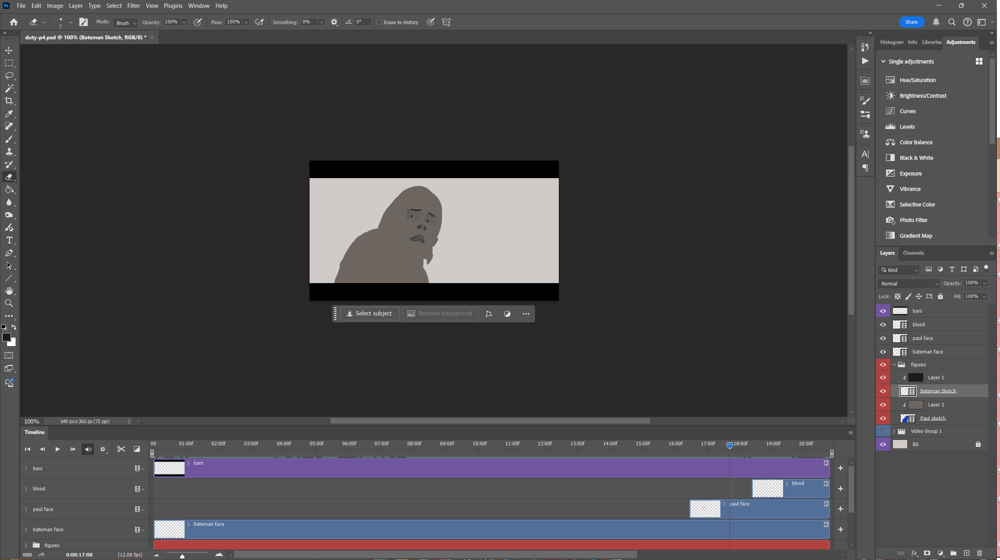
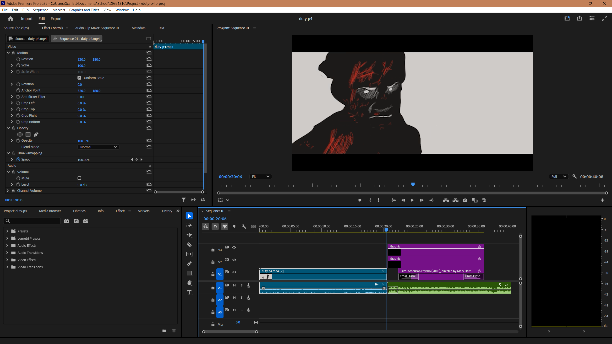

Project 4: Hip to be Square
Hip to be Square Animation (Youtube)This rotoscope animation of a pivotal moment from American Psycho transforms Patrick Bateman and Paul Allen into shadowy silhouettes stripped of humanity. The scene, which juxtaposes Bateman’s detached critique of "Hip to be Square" by Huey Lewis and the News with his eerily calculated violence, serves as a metaphor for the hollowness of Bateman’s character and the world he inhabits—a realm of elites so far removed from humanity that they are devoid of empathy and substance.
In the context of sensationalism, this animation questions how individuals and moments are honored in a culture that glorifies spectacle over substance. Bateman’s superficiality and violent narcissism reflect the darker tendencies of a society captivated by wealth and fleeting notoriety. Shadows symbolize the insignificance of this kind of impact as they are present only temporarily and then vanish into nothingness.
The animation critiques the lack of humanity in both Bateman’s sphere and the cultural landscape of the sphere of society in which he resides. His psychopathy is more than just a condition—it is a metaphor for the disturbingly detached nature of the elite who are “winning” the rat race. Bateman has everything – looks, money, girls – yet he is nothing. When this is the life of those on top, why should we honor it? In a world that often immortalizes celebrity power and extravagance, this piece highlights the danger of erasing the human core. Monuments should emerge not from shadows, but from the distinctly human characteristics of compassion, connection, and depth.
Process
Programs used: Photoshop (rotoscoping) & Premiere Pro (credits, audio, transitions)
 